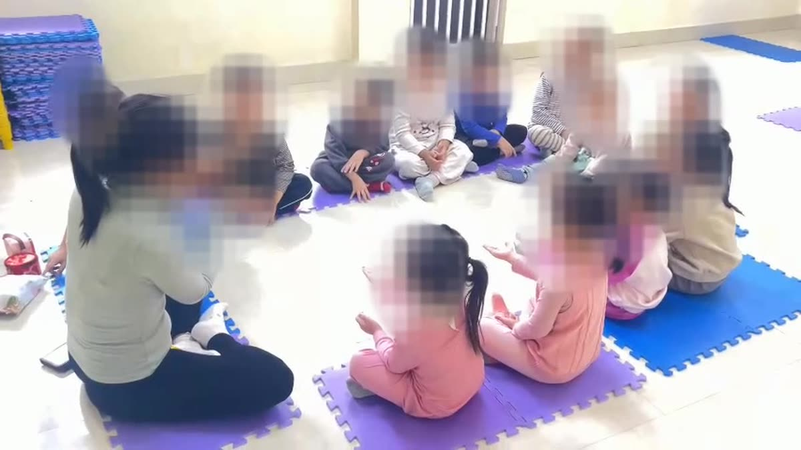
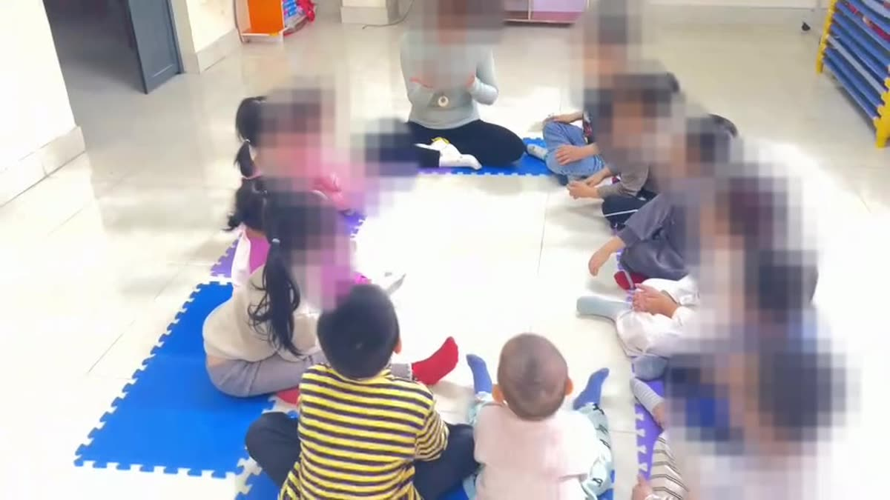

Yoga trẻ em · Trò chơi
Trò chơi gõ chuông: nghe đến khi tiếng chuông tắt hẳn

“Cô gõ một tiếng thôi nhé. Con nào nghe đến khi tiếng chuông bay đi hết thì giơ tay.”
Boong.
Tiếng chuông ngân ra, tròn và dài. Gần hai mươi bạn nhỏ ngồi quanh vòng tròn. Có bạn nghiêng đầu. Có bạn nín thở. Có bạn sốt ruột giơ tay ngay khi tiếng chuông vẫn còn.
Cô mỉm cười. Chưa đâu con. Nghe tiếp nào.
Trò chơi này để làm gì
Ở lớp mầm non, tiếng ồn là chuyện bình thường. Các con nói, cười, gọi nhau. Cô có thể nói to hơn các con, nhưng cách ấy không bền.
Chiếc chuông thì khác. Nó không ra lệnh. Nó chỉ ngân lên, rồi nhỏ dần, nhỏ dần. Muốn biết lúc nào tiếng chuông tắt hẳn, con phải tự im lặng. Không ai bắt cả.
Với Sophia, yoga cho trẻ bắt đầu từ hơi thở và từ khả năng dừng lại. Trò gõ chuông là một cánh cửa nhỏ để các con chạm vào điều đó: ngồi yên, thở chậm, nghe cho đến hết. Cô hay dùng nó khi lớp vừa chạy nhảy xong và cần lắng xuống, hoặc ngay trước giờ nằm thư giãn cuối buổi.
Xem lớp chơi
Video thật từ một lớp mầm non. Cô đã lồng nhạc nền nhẹ để bớt tiếng ồn của lớp.
Cách chơi, từng bước
Ảnh cắt từ video lớp học.
-
 1
1Ngồi vòng tròn, làm quen với chiếc chuông
🔔 Nhìn và chờ
Cô làm: Cả lớp ngồi xếp bằng trên thảm thành một vòng tròn, cô ngồi cùng vòng với các con. Cô đặt chiếc chuông trên lòng bàn tay, giơ cho các con xem. Chuông bằng đồng, có một chiếc dùi gỗ nhỏ. Chỉ nhìn thôi đã thấy tò mò.
Cô nói: “Chiếc chuông này hát rất nhỏ. Muốn nghe được, cả lớp mình phải yên lặng hơn nó.”
-

2Cô gõ một tiếng, cả lớp nghe
🔔 Lắng nghe
Cô làm: Cô gõ nhẹ một tiếng vào thành chuông. Chỉ một tiếng. Tay cô giữ chuông thật yên để tiếng ngân dài. Lúc này cô cũng thở ra chậm, các con thường bắt chước theo mà không cần nhắc.
Cô nói: “Thở ra cùng tiếng chuông nào. Chậm… chậm…”
-
3
Hết tiếng thì giơ tay
🔔 Tự biết dừng
Con làm: Ai nghe thấy tiếng chuông tắt hẳn thì giơ tay. Bạn nào giơ sớm cũng không sao, cô chỉ hỏi khẽ: “Con còn nghe thấy không?” Lần sau, con tự chờ lâu hơn một chút. Đó chính là phần quý nhất của trò chơi.
Cô nói: “Tiếng chuông bay đi đâu rồi nhỉ? Ai còn nghe thấy?”
-
 4
4Từng bạn được gõ chuông
🔔 Đến lượt con
Cô làm: Cô cầm chuông đi quanh vòng tròn, dừng trước từng bạn. Cô giữ chuông, con cầm dùi và gõ một tiếng. Bạn gõ mạnh thì tiếng chát, bạn gõ nhẹ thì tiếng tròn. Con tự nghe ra sự khác nhau ấy. Các bạn chưa đến lượt ngồi chờ, nghe tiếng chuông của bạn mình.
Cô nói: “Gõ thật nhẹ thôi con. Nghe chuông của con hát này.”
🔔 Thử nghe đến hết tiếng
Bấm vào chiếc chuông (bật loa nhé). Khi nào không còn nghe thấy gì nữa thì bấm “Hết tiếng rồi”. Bố mẹ có thể chơi cùng con ngay ở nhà.
Lợi ích cô thấy ở các con
- Lắng nghe lâu hơn. Buổi đầu, nhiều bạn giơ tay sau hai ba giây. Vài buổi sau, các con chờ được lâu hơn hẳn, vì đã biết tiếng chuông còn kéo dài.
- Tự điều chỉnh, không cần ai nhắc. Muốn giơ tay mà phải chờ, đó là lúc con tập giữ mình lại. Một kỹ năng nhỏ, nhưng là nền cho việc ngồi học, chờ lượt, kiềm cơn nóng vội sau này.
- Hơi thở chậm lại. Tiếng ngân dài tự kéo hơi thở ra dài theo. Cả lớp thường dịu hẳn sau một hai lượt chuông.
- Kiểm soát lực tay. Gõ nhẹ thì chuông hát hay, gõ mạnh thì chói tai. Con học điều đó bằng chính đôi tai mình, không phải vì cô cấm.
- Chờ lượt và tôn trọng bạn. Ai cũng được gõ. Khi bạn đang gõ, cả lớp nghe bạn.
- Một nghi thức để quay về. Lâu dần, chỉ cần cô cầm chuông lên, lớp đã tự nhỏ tiếng. Chiếc chuông thành tín hiệu “mình dừng lại một chút”.
Cô cũng xin nói thật: một trò chơi năm phút không biến một bạn hiếu động thành một bạn ngồi yên. Nó chỉ là một viên gạch nhỏ, cần lặp lại nhiều buổi, đi cùng giấc ngủ đủ, ăn uống lành, chơi ngoài trời và sự kiên nhẫn của người lớn. Các nghiên cứu về chánh niệm cho trẻ mầm non cũng thấy như vậy. Chương trình Kindness Curriculum (Flook và cộng sự, 2015, tạp chí Developmental Psychology) gồm những hoạt động lắng nghe và thở chậm rất ngắn, và ghi nhận trẻ cải thiện một phần khả năng tự điều chỉnh, chia sẻ với bạn. Bài tổng quan của Diamond và Lee (2011, tạp chí Science) chỉ ra rằng các hoạt động giúp trẻ tập dừng lại, chờ và chú ý có ích khi được luyện thường xuyên và tăng dần độ khó. Lợi ích đến từ sự đều đặn, không phải từ một buổi.
Vài cách chơi tiếp, khi các con đã quen
Nhắm mắt nghe. Cả lớp nhắm mắt hoặc nhìn xuống thảm. Không nhìn thấy tay bạn, mỗi con phải tự quyết định lúc nào hết tiếng.
Chuông và hơi thở. Hít vào khi cô nâng dùi, thở ra theo tiếng ngân. Ba lượt chuông là ba hơi thở dài. Hợp để mở đầu giờ thiền nhỏ cho các con.
Chuông thần kỳ. Cả lớp đang làm tư thế cái cây, con mèo, con rắn… Nghe tiếng chuông thì “đóng băng”, giữ yên đến khi tiếng chuông tắt rồi mới đổi tư thế.
Chuyền chuông. Với các bạn lớn hơn, cô cho chuyền chiếc chuông quanh vòng mà cố không để nó kêu. Trò này cần đôi tay rất chậm, rất cẩn thận.
Vài điều cô luôn giữ
- Cô giữ chuông, con cầm dùi. Chuông đồng khá nặng với tay bé. Cô không để con tự cầm chuông đi lại hay chuyền nhanh.
- Gõ nhẹ, không gõ sát tai. Tai trẻ nhạy. Cô luôn giữ chuông cách mặt con một khoảng, và không đặt chuông lên đầu hay người con.
- Dùi gỗ để gõ, không để vung. Gõ xong, cô nhận lại dùi ngay.
- Bạn nào sợ tiếng to thì được ngồi xa hơn hoặc che tai. Không ép bạn nào gõ.
- Giơ tay sớm không sao. Không có thắng thua, không ai bị chê. Cô chỉ mời con nghe lại.
- Ngắn thôi. Năm bảy phút là đủ. Thấy các con bắt đầu mỏi, cô chuyển sang nằm thư giãn.
Điều cô học được
Cô từng nghĩ giữ lớp yên là việc của người lớn. Hóa ra một chiếc chuông nhỏ làm được tốt hơn cô.
Vì nó không bắt ai im. Nó chỉ mời.
Và các con, khi được mời, lại tự chọn yên lặng. Cô mong mai này, lúc lòng con ồn ào, con nhớ ra mình có thể dừng lại, thở một hơi dài, và nghe cho đến hết.
🌿 Thầy cô muốn mang trò chơi này về lớp mình?
Cách chọn chuông, cách giữ lớp lắng xuống mà không quát, cách đan trò chơi lắng nghe vào giữa các tư thế và giờ thư giãn… cô hướng dẫn trong khóa Đào tạo Huấn luyện viên Yoga trẻ em, cùng một buổi học trọn vẹn từ lúc chào nhau đến lúc nằm nghỉ.
Bố mẹ muốn con được học ở lớp của cô thì nhắn cô hỏi lịch nhé.